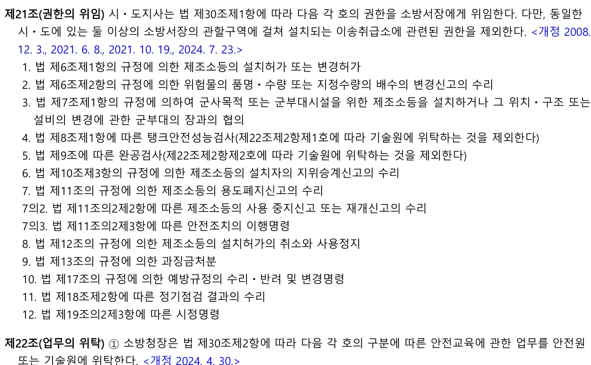
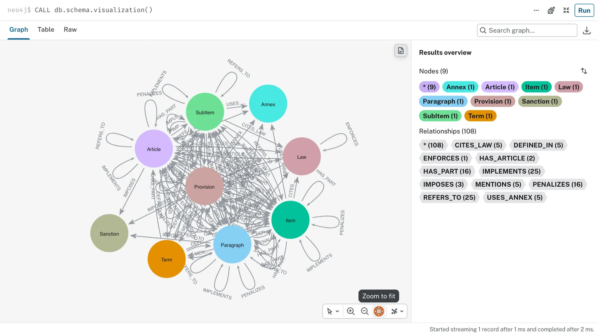
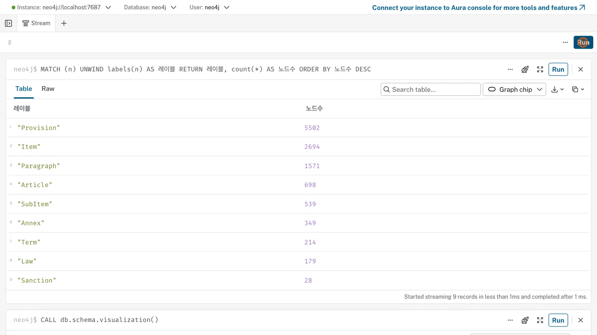
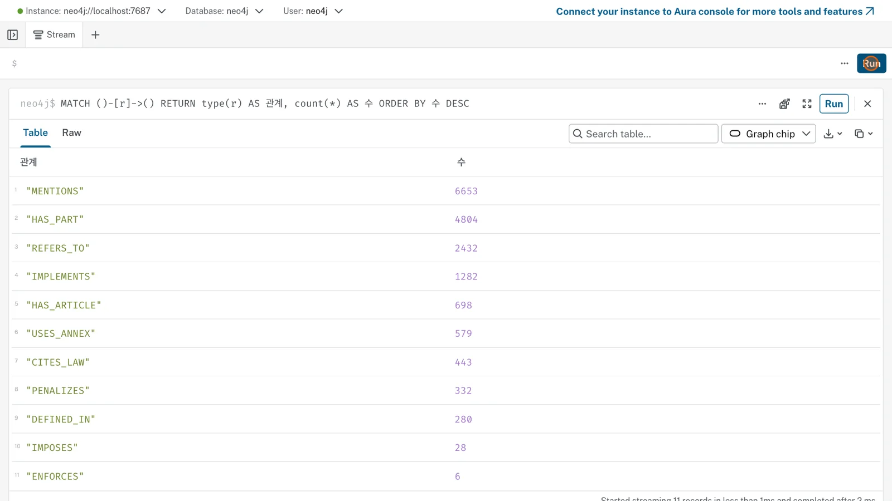
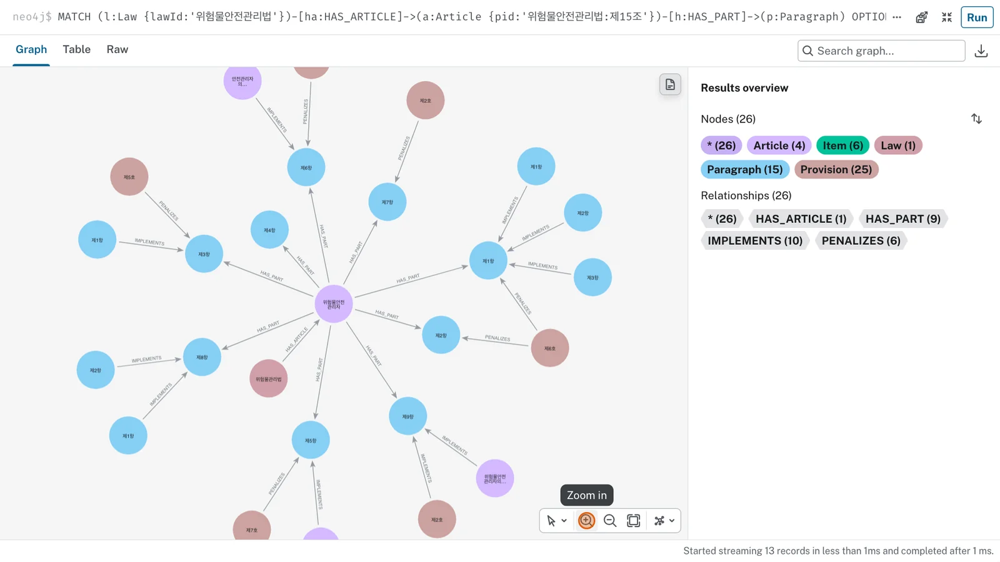
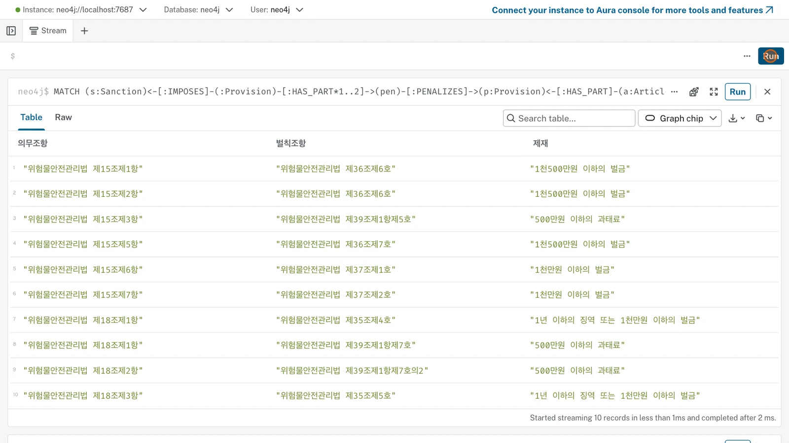

Claude Code에 적재 코드를 맡겨 법령 PDF 9개를 조·항·호·목 노드와 인용·위임·벌칙 관계로 Neo4j에 넣습니다. 수치 확인에 그치지 않고 조 수와 표본 조문을 PDF 원문과 대조한 뒤, 오류를 구체적으로 짚어 수정을 요청합니다.
무엇을 · 왜#
5장의 스키마 가운데 구조층·참조층·용어층을 채웁니다. 조문을 나누고 「제N조제M항」 인용을 찾는 작업은 규칙(들여쓰기·정규식)으로 처리하고, LLM은 코드를 작성하는 데만 사용합니다. 따라서 같은 PDF로 다시 실행하면 같은 그래프가 나옵니다. 조문 본문에서 주체와 의무를 뽑는 의미층(Actor·Norm)은 7장에서 다룹니다.
바이브 코딩에서 사람이 맡는 역할은 검증입니다. PDF를 파싱할 때는 띄어쓰기와 줄바꿈이 깨지기 쉬워, 이 장의 절반은 적재 결과를 원문과 대조하는 데 할애합니다.
따라 하기#
- 적재 코드를 요청합니다(P4). 5장에서 사용한 Claude Code 세션에 이어서 입력합니다. 사용할 도구(uv·PyMuPDF·neo4j 드라이버), 파일 두 개의 역할,
MERGE, 비밀번호 처리 방법, 작은 범위에서 시작해 확대하는 순서, 완료 후 보고할 수치를 적었습니다.좋아. 이제 schema.md 대로 적재 코드를 만들어 줘. - 파이썬은 uv 로 프로젝트를 만들고(python 3.12) PyMuPDF 와 neo4j 드라이버를 써. - parse_law.py: PDF → 조·항·호·목 JSON(data/ 폴더). ingest.py: JSON → Neo4j. MERGE 로 넣어서 다시 돌려도 중복이 없게. - 접속은 bolt://localhost:7687, 사용자 neo4j, 비밀번호는 .env 의 NEO4J_PASSWORD 에서 읽어(코드나 화면에 비밀번호를 쓰지 마). - 먼저 위험물안전관리법 3종만 파싱해서 조·항·호 수를 보여 주고, 그다음 9개 모두 적재해. - 끝나면 레이블별 노드 수, 관계 타입별 수, 걸린 시간을 보여 주고 커밋해 줘. - Claude가 하는 일을 보며 승인합니다.
uv init --bare --python 3.12와uv add pymupdf neo4j python-dotenv로 프로젝트를 만든 뒤,uv run python - <<'EOF' …형태의 짧은 조사 스크립트로 PDF 줄의 x 좌표를 여러 번 측정했습니다(모두 읽기 작업이므로 1로 승인했습니다). 그 결과 「조 34, 항·호 50, 목 60」이라는 들여쓰기 규칙을 찾았습니다. 요청한 대로 위험물안전관리법 3종을 먼저 파싱해 조 157, 항 276, 호 357, 목 67을 보여 준 뒤 9개를 모두 적재하고 커밋했습니다(14분 35초). - 사람이 직접 수치를 확인합니다. Claude Code 입력창 맨 앞에
!를 붙이면 셸 명령을 바로 실행하고, 그 출력은 Claude도 읽습니다. 아래 「원문과 맞춰 보기」의 두 질의를 이 방식으로 실행합니다. - 오류를 구체적으로 짚어 수정을 요청합니다(P5). 대조 과정에서 찾은 띄어쓰기 오류 하나의 위치·틀린 글·맞는 글을 명시하고, 수정 후 확인 방법까지 적습니다(아래 3절).
- 처음부터 다시 실행해 시간을 측정합니다.
! time uv run parse_law.py && time uv run ingest.py
만들어진 파일#
| 파일 | 하는 일 |
|---|---|
pyproject.toml, uv.lock, .python-version |
Python 3.12, 의존성 pymupdf·neo4j·python-dotenv. 실행은 uv run … |
parse_law.py |
PDF → data/<법령>.json. 각 줄의 x 좌표(들여쓰기)로 조·항·호·목을 나누고, 쪽 머리말·꼬리말을 제거하며, 부칙을 제외합니다. [시행일: …] 판본을 분리하고 줄바꿈 위치의 띄어쓰기를 추정합니다(Joiner) |
extract.py |
JSON → 노드·관계 행. 「제N조제M항」 인용을 분석해 REFERS_TO·IMPLEMENTS·PENALIZES·CITES_LAW를 생성합니다. 형량 문구로 Sanction을, 정의·약칭 문형으로 Term·DEFINED_IN·MENTIONS를 생성합니다. |
lawtext.py |
정규화. 키용 norm_key(가운뎃점 7종 → ·, 공백 제거), 전문 색인용 search_text(가운뎃점 → 공백) |
ingest.py |
schema.cypher의 제약·색인을 먼저 적용하고 UNWIND $rows … MERGE로 일괄 적재합니다. --dry-run·--reset·--prune |
data/는 PDF에서 다시 만들 수 있어 .gitignore에 포함했습니다. 핵심 코드를 발췌하면 다음과 같습니다(Claude가 작성한 코드이며 실행할 때마다 달라질 수 있습니다).
# parse_law.py — 줄의 들여쓰기(x 좌표, pt)로 단계를 가른다
X_ARTICLE, X_PARA, X_SUB, X_SUBSUB = 34, 50, 60, 73 # 조 · 항/호 · 목 · 세목
…
busy = open_bracket(target) # '<개정 …' 이 아직 안 닫혔으면 날짜 줄이다
if near(x, X_PARA) and text[0] in CIRCLED and not busy:
start_paragraph(CIRCLED[text[0]], text[1:], line) # ① ② … → 항
continue
if near(x, X_PARA) and not busy and (m := RE_ITEM.match(text)):
no, branch = int(m[1]), int(m[2] or 0) # '7의2.' → (7, 2)
… # 번호가 차례대로일 때만 호로 본다
# ingest.py — 행 묶음을 한 번에 MERGE
def merge_nodes(session, label, key, rows, extra_label=""):
query = f"UNWIND $rows AS r MERGE (n:{label} {{{key}: r.{key}}}) SET n += r"
if extra_label:
query = f"UNWIND $rows AS r MERGE (n:{label} {{{key}: r.{key}}}) SET n:{extra_label}, n += r"
for chunk in batches(rows):
session.run(query, rows=chunk).consume()
def merge_edges(session, kind, rows):
src_label, src_key, dst_label, dst_key = EDGE_ENDS[kind]
query = (f"UNWIND $rows AS r "
f"MATCH (a:{src_label} {{{src_key}: r.src}}) MATCH (b:{dst_label} {{{dst_key}: r.dst}}) "
f"MERGE (a)-[e:{kind}]->(b) SET e += r.props")
for chunk in batches(rows):
session.run(query, rows=chunk).consume()
개정 날짜가 다음 줄로 이어져 12. 3., 2021. …처럼 숫자로 시작하는 줄이 생기는데, 들여쓰기, 「<개정」 괄호가 닫혔는지 여부, 번호의 연속성을 함께 확인해 호로 잘못 인식하지 않도록 합니다.
실행과 수치#
5단계의 출력입니다(P5의 수정 사항까지 반영한 최종 결과).
법령 조 항 호 목 삭제 예정 시행일
위험물안전관리법 시행규칙 82 130 159 47 7 0 2026-07-01
위험물안전관리법 시행령 29 41 96 20 1 0 2026-07-01
위험물안전관리법 46 105 102 0 7 0 2025-08-07
폐기물관리법 시행규칙 159 327 677 318 49 1 2026-11-12
폐기물관리법 시행령 72 79 204 84 20 0 2026-11-12
폐기물관리법 112 353 555 19 56 2 2026-11-12
화학물질관리법 시행규칙 85 264 369 49 32 0 2025-10-01
화학물질관리법 시행령 34 47 164 2 5 0 2026-10-08
화학물질관리법 79 225 368 0 15 0 2026-10-08
합계 698 1571 2694 539
법령 9개, 3.0초 → data/
uv run parse_law.py 2.09s user 0.63s system 78% cpu 3.480 total
「조」에는 삭제된 조와 시행 예정 판본(「예정」)이 포함됩니다. 이어지는 ingest.py 출력은 다음 표와 같습니다.
| 레이블 | 노드 | 관계 타입 | 수 | |
|---|---|---|---|---|
| Provision(조·항·호·목 공통) | 5,502 | MENTIONS |
6,653 | |
| Item(호) | 2,694 | HAS_PART |
4,804 | |
| Paragraph(항) | 1,571 | REFERS_TO |
2,432 | |
| Article(조) | 698 | IMPLEMENTS |
1,282 | |
| SubItem(목) | 539 | HAS_ARTICLE |
698 | |
| Annex | 349 | USES_ANNEX |
579 | |
| Term | 214 | CITES_LAW |
443 | |
| Law | 179 | PENALIZES |
332 | |
| Sanction | 28 | DEFINED_IN 280 · IMPOSES 28 · ENFORCES 6 |
||
| 노드 합계 | 6,272 | 관계 합계 | 17,537 |
Provision은 조·항·호·목에 공통으로 붙는 레이블이므로 합계에 중복으로 집계하지 않습니다. Law 179개 가운데 9개가 적재한 법령이고 170개는 조문이 인용한 적재 대상 밖 법령의 껍데기 노드입니다. 적재는 걸린 시간: 추출 0.5초 + 적재 1.0초 = 1.6초, 명령 전체의 실행 시간은 1.98초였습니다.
PBL 특강 교재는 위험물안전관리법 하나를 「조 46 · 항 105 · 호 102」로 적재했는데, 이번 결과에서 해당 법령의 수치와 일치합니다.
원문과 맞춰 보기#
1. 조 수#
! docker exec graphrag-law-neo4j cypher-shell -u neo4j -p "$NEO4J_PASSWORD" --format plain "MATCH (l:Law {inCorpus:true})-[:HAS_ARTICLE]->(a:Article) WHERE a.isCurrent AND a.status <> '삭제' RETURN l.lawId AS 법령, count(a) AS 현행조수 ORDER BY 법령"
법령, 현행조수
"위험물안전관리법", 46
"위험물안전관리법 시행규칙", 82
"위험물안전관리법 시행령", 29
"폐기물관리법", 99
"폐기물관리법 시행규칙", 150
"폐기물관리법 시행령", 68
"화학물질관리법", 76
"화학물질관리법 시행규칙", 74
"화학물질관리법 시행령", 32
Claude는 이 출력을 읽고 5장 schema.md 1절의 조 수(「제N조(」 줄을 센 값)와 다른 세 법령의 차이를 설명했습니다. 폐기물관리법 103 → 99는 부칙 제1조·제8조와 시행 예정 판본 2개(제13조의2, 제68조), 시행규칙 151 → 150은 시행 예정 판본 1개(제10조), 화학물질관리법 시행규칙 75 → 74는 부칙 제1조 때문입니다.
이 교재를 작성하면서 별도로 PyMuPDF로 추출한 텍스트에서 제N조(·제N조 삭제로 시작하는 줄을 부칙 앞까지 모아, 9개 법령 모두 그래프의 현행 조 번호 집합과 비교했습니다. 빠진 조 0, 남는 조 0이었습니다.
2. 표본 조문 세 개#
조 수가 맞아도 조 안의 항·호가 틀릴 수 있습니다. 구조가 서로 다른 세 조문을 골라 확인합니다.
! docker exec graphrag-law-neo4j cypher-shell -u neo4j -p "$NEO4J_PASSWORD" --format plain "MATCH (a:Article) WHERE a.pid IN ['위험물안전관리법:제15조', '위험물안전관리법 시행령:제21조', '위험물안전관리법 시행규칙:제53조'] OPTIONAL MATCH (a)-[:HAS_PART]->(p) WITH a, p ORDER BY p.order RETURN a.pid AS 조, a.text AS 머리글, collect(p.label) AS 항호"
조, 머리글, 항호
"위험물안전관리법:제15조", "", ["제1항", "제2항", "제3항", "제4항", "제5항", "제6항", "제7항", "제8항", "제9항"]
"위험물안전관리법 시행령:제21조", "시ㆍ도지사는 법 제30조제1항에 따라 다음 각 호의 권한을 소방서장에게 위임한다. 다만, 동일한시ㆍ도에 있는 둘 이상의 소방서장의 관할구역에 걸쳐 설치되는 이송취급소에 관련된 권한을 제외한다.", ["제1호", "제2호", "제3호", "제4호", "제5호", "제6호", "제7호", "제7호의2", "제7호의3", "제8호", "제9호", "제10호", "제11호", "제12호"]
"위험물안전관리법 시행규칙:제53조", "", ["제1항", "제2항"]



| 조문 | 그래프 | 판정 | |
|---|---|---|---|
| 법 제15조 | 항 9개, 호 없음 | 항 9개 | 맞음. 제2항·제3항 본문 글자도 일치 |
| 시행령 제21조 | 항 없이 호 14개(1~7, 7의2, 7의3, 8~12) | 같음 | 구조는 맞음. 줄을 넘어간 개정일 12. 3., 2021. …이 호로 잡히지 않음. 머리글 「동일한시ㆍ도에」는 틀림(원문 「동일한 시ㆍ도에」) |
| 시행규칙 제53조 | ①에 호 4개, ②에 호 2개 | 항 2개 | 맞음. ②의 「하여야한다」는 원문 그대로 |
띄어쓰기 오류는 Claude가 ! 출력을 읽고 먼저 짚었습니다. PDF에서 「동일한」으로 줄이 끝나고 다음 줄이 「시ㆍ도에」로 시작하는 자리인데, 「시ㆍ도에」가 다른 줄 안에 낱말로 나온 적이 없어 붙였다고 설명했습니다. 검색에는 영향이 없지만(전문 색인은 두 글자씩, 용어 키는 공백을 빼고 비교) 답변에는 잘못된 원문이 인용됩니다.
3. 오류를 구체적으로 짚어 수정 요청하기(P5)#
「띄어쓰기 고쳐 줘」 대신 어디가 · 어떻게 틀렸고 · 맞는 글은 무엇이며 · 고친 뒤 무엇으로 확인할지를 적었습니다.
시행령 제21조 머리글이 「동일한시ㆍ도에」로 붙었어. PDF 원문은 「동일한 시ㆍ도에」야. 줄바꿈 자리 띄어쓰기 규칙을 고쳐 줘.
고친 뒤 위험물안전관리법 3종에서 줄바꿈 자리 판정이 바뀐 곳의 개수와 예를 보여 주고, 법 제15조·시행령 제21조·시행규칙 제53조 본문을 PDF 와 다시 대조해. 다시 적재해서 노드·관계 수가 그대로인지 확인하고 커밋해 줘.
5분 39초 뒤 받은 보고의 주요 내용입니다.
- 띄어쓰기 판단 근거 네 가지를 추가했습니다: 어절 끝(앞줄이 조사·어미로 끝남, 「동일한|시ㆍ도에」), 인용 표기 뒤(「제11조제3항|각」), 닫는 낫표 뒤(「「전자정부법」|제36조제1항에」), 여는 따옴표 앞. 「부과|권자」처럼 조사와 같은 글자로 끝나는 명사는 예외로 두었습니다.
- 위험물안전관리법 3종의 줄바꿈 자리 692곳 중 25곳이 붙임 → 띄움으로 바뀌었고, 하나씩 읽어 모두 맞다고 판정했습니다. 9개 법령 전체로는 3,871곳 중 78곳입니다.
- 세 조문에서 공백을 제외한 글자 수가 PDF와 1,167/1,167 · 567/567 · 674/674로 일치하고, 줄바꿈 자리 31곳의 판정이 모두 맞았습니다.
- 규칙으로 판단하지 못해 붙여 둔 위치는 여전히 약 9%입니다(예: 「재해발생시|비상조치의」처럼 앞 낱말이 문서에 한 번만 나오는 경우).
4. 다시 실행해도 중복이 없는지 확인하기 — 그리고 남는 기존 데이터#
P5에서 「노드·관계 수가 그대로인지」 물었는데 답은 「그대로가 아니다」였습니다. 노드 6,268 → 6,272, 관계 17,513 → 17,537. 띄어쓰기가 고쳐지면서 「(이하“위험물운반자”라 한다)」처럼 붙어 있던 약칭 4개가 새로 Term으로 생성되었고, DEFINED_IN이 10개, MENTIONS가 21개 늘고 7개 줄었습니다.
그런데 줄어야 할 MENTIONS 7개가 DB에 그대로 남아 있었습니다. MERGE는 이미 있으면 유지하고 없으면 추가하기만 하므로, 다시 실행해도 중복은 생기지 않지만 이번 추출에서 빠진 기존 노드·관계를 삭제하지는 않습니다. Claude는 ingest.py에 --prune(이 스크립트의 노드·관계 중 이번 추출에 없는 항목 삭제)을 더해 한 번 실행했고, 정확히 그 7개만 지워졌습니다. 삭제 명령이므로 승인 전에 코드를 읽고 1을 선택했습니다. 이후 옵션 없이 다시 실행해도 6,272 / 17,537로 유지되었습니다.
| 명령 | 쓰는 때 |
|---|---|
uv run ingest.py |
일반적인 적재에 사용합니다. 다시 실행해도 중복이 생기지 않습니다. |
uv run ingest.py --prune |
추출 규칙을 수정한 뒤 기존 데이터를 정리합니다. data/에 9개 법령이 모두 있을 때만(없는 법령의 노드도 지움) |
uv run ingest.py --reset |
이 스크립트의 레이블이 붙은 노드를 모두 지우고 처음부터 적재합니다. |
uv run ingest.py --dry-run |
DB에 쓰지 않고 추출한 개수만 확인합니다. |
5. 시행 예정 조문#
국가법령정보센터 PDF에는 시행일이 다른 판본이 같은 문서에 함께 실립니다. 폐기물관리법 제13조의2·제68조, 폐기물관리법 시행규칙 제10조는 현행 조문 뒤에 [시행일: …]이 붙은 같은 번호의 조문이 한 번 더 나옵니다. 조 번호만으로 MERGE하면 뒤의 조문이 앞의 조문을 덮어씁니다. 이 파서는 그런 판본의 pid 끝에 @시행일을 붙여 따로 적재하고 isCurrent=false로 표시합니다. 질의에서는 기본적으로 isCurrent=true인 조문만 조회합니다.
MATCH (a:Article) WHERE NOT a.isCurrent RETURN a.pid AS 조, a.effectiveFrom AS 시행일 ORDER BY 조
"폐기물관리법 시행규칙:제10조@20261210", "2026-12-10"
"폐기물관리법:제13조의2@20270708", "2027-07-08"
"폐기물관리법:제68조@20270108", "2027-01-08"
확인 — Neo4j Browser로 보기#
CALL db.schema.visualization()으로 실제로 적재된 스키마를 확인합니다. 레이블 9개와 관계 타입 11종이 108가지 조합으로 이어졌습니다. 4장의 맛보기 그래프와 달리 노드가 많아 그래프가 빽빽하면, 결과 칸을 전체 화면으로 키우고 「Zoom to fit」을 선택한 뒤 한 단계 확대해야 노드 이름이 보입니다.

Browser에서 확인한 레이블·관계 타입별 개수도 위 표와 일치합니다.
MATCH (n) UNWIND labels(n) AS 레이블 RETURN 레이블, count(*) AS 노드수 ORDER BY 노드수 DESC

MATCH ()-[r]->() RETURN type(r) AS 관계, count(*) AS 수 ORDER BY 수 DESC

제15조와 그 항을 가리키는 하위법령·벌칙 조문을 함께 그려 봅니다.
MATCH (l:Law {lawId:'위험물안전관리법'})-[ha:HAS_ARTICLE]->(a:Article {pid:'위험물안전관리법:제15조'})-[h:HAS_PART]->(p:Paragraph)
OPTIONAL MATCH (pen:Provision)-[pz:PENALIZES]->(p)
OPTIONAL MATCH (low:Provision)-[im:IMPLEMENTS]->(p)
RETURN l, ha, a, h, p, pen, pz, low, im

골든 퀘스천 5번의 경로인 「제재 ← 벌칙 조·항 → 벌칙 호 → 의무 항 ← 조」를 한 번에 그립니다.
MATCH path = (s:Sanction)<-[:IMPOSES]-(:Provision)-[:HAS_PART*1..2]->(pen)-[:PENALIZES]->(:Provision)<-[:HAS_PART]-(a:Article)
WHERE a.pid IN ['위험물안전관리법:제15조', '위험물안전관리법:제18조']
RETURN path

같은 패턴의 결과를 테이블로 조회하면(RETURN p.citation AS 의무조항, pen.citation AS 벌칙조항, s.text AS 제재 ORDER BY p.order) 10행이 나옵니다. 제35조~제39조 원문과 10건 모두 일치했습니다.

막히면
적재한 조문의 띄어쓰기가 PDF와 다릅니다
- 증상: 시행령 제21조 머리글이 「다만, 동일한시ㆍ도에 있는 둘 이상의…」로 붙어 나옵니다(원문 「동일한 시ㆍ도에」).
- 원인: PDF에서 낱말 사이에 줄바꿈이 있는 위치는 띄울지 붙일지 판단할 정보가 없습니다. 첫 버전에서는 앞줄 끝 여백과 다른 줄에 나온 낱말로만 추정하고, 근거가 없으면 붙였습니다.
- 조치: 틀린 위치·글·정답과 확인 방법을 적어 다시 요청(위 P5) →
uv run parse_law.py && uv run ingest.py --prune. 규칙으로 판단하지 못한 위치(약 9%)는 여전히 붙여 둡니다.
같은 조 번호가 두 번 나와 서로 덮어씁니다
- 증상: 폐기물관리법 제13조의2·제68조, 같은 법 시행규칙 제10조가 PDF에 두 번 나옵니다(끝에
[시행일: 2027. 7. 8.]등). 조 번호만으로MERGE하면 뒤의 조문이 앞의 조문을 덮어쓰거나 항·호가 섞입니다. 부칙의 제1조·제8조도 본칙 번호와 겹칩니다. - 원인: 국가법령정보센터 PDF는 시행일이 다른 판본을 같은 문서에 함께 싣습니다.
- 조치: 부칙은 조문 노드로 적재하지 않고, 시행 예정 판본은
pid에@YYYYMMDD를 붙여 따로 적재합니다(isCurrent=false). 확인:MATCH (a:Article) WHERE NOT a.isCurrent RETURN a.pid, a.effectiveFrom.
다시 적재했는데 없어져야 할 관계가 남아 있습니다
- 증상: 추출 규칙을 고쳐
uv run ingest.py를 다시 실행했는데, 고친 뒤에는 없어야 할MENTIONS관계 7개가 DB에 그대로 남아 있습니다. - 원인:
MERGE는 추가만 합니다. 이번 추출에서 빠진 기존 노드·관계는 삭제하지 않습니다. - 조치:
uv run ingest.py --prune(data/에 9개 법령이 모두 있을 때만). 처음부터 다시 하려면uv run ingest.py --reset.
「도지사」로 찾으면 조문이 1건만 나옵니다
- 증상: 전문 색인에 넣는 글의 가운뎃점을 「·」로 통일했더니 「도지사」로 찾을 때 조문이 1건만 검색됩니다.
- 원인: Lucene(전문 색인)이 「·」를 낱말을 잇는 글자로 보아 「시·도지사」·「위치·구조·설비」를 한 낱말로 묶습니다.
- 조치: 전문 색인용 글(
normText·searchText)은 가운뎃점을 공백으로 바꾸고, 용어 키(normName·normKeys)만 「·」로 통일합니다(lawtext.py의search_text/norm_key). 바꾼 뒤 「도지사」 37건, 「위치 구조 설비」 12건이 검색되었습니다.
확인 문제#
조 수가 PDF와 같으면 적재가 맞았다고 볼 수 있나요?
아닙니다. 조 수는 맞아도 조 안의 항·호 구조나 글자가 틀릴 수 있습니다. 이 장에서는 조 번호 집합을 비교한 뒤, 구조가 다른 표본 세 개(항만 있는 조, 항 없이 호만 있는 조, 항 아래 호가 있는 조)를 PDF와 맞춰 보았고, 그 과정에서 조 수만으로는 드러나지 않던 띄어쓰기 오류를 찾았습니다.
P5 프롬프트가 「띄어쓰기 고쳐 줘」보다 나은 점은 무엇인가요?
틀린 위치(시행령 제21조 머리글), 틀린 글(「동일한시ㆍ도에」), 맞는 글(「동일한 시ㆍ도에」), 고칠 대상(줄바꿈 자리 규칙), 고친 뒤 확인할 것(바뀐 곳의 개수와 예, 세 조문 재대조, 노드·관계 수)을 모두 적었습니다. 그래서 Claude가 수정 결과를 수치로 보고했고, 노드·관계 수가 달라진 이유와 남은 MENTIONS 7개까지 드러났습니다.
MERGE로 적재하면 다시 돌려도 안전한데, --prune은 왜 따로 필요한가요?
MERGE는 이미 있는 것은 두고 없는 것만 더하므로 중복은 생기지 않지만, 규칙을 고쳐 이번 추출에서 사라진 노드·관계를 지우지는 않습니다. 이런 기존 데이터를 삭제하는 옵션이 --prune입니다. 지우는 명령이므로 data/에 9개 법령이 모두 있을 때만 씁니다.
시행 예정 조문을 같은 pid로 MERGE하면 어떤 일이 생기나요?
현행 조문과 시행 예정 조문이 한 노드로 합쳐져 뒤에 읽은 판본이 앞의 판본을 덮어쓰거나 항·호가 섞입니다. 그래서 pid에 @시행일을 붙여 따로 두고 isCurrent=false로 표시해 질의에서 현행 조문만 조회하도록 했습니다.